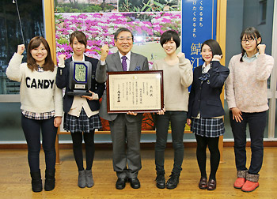
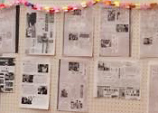
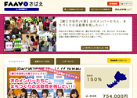

「鯖江市役所JK課」は、「市民主役条例」を制定するなど、市民参加による新しいまちづくりを進めてきた福井県鯖江市が、2014年にスタートさせた実験的な市民協働推進プロジェクトです。
地元のJK（女子高生）たちが中心となって、自由にアイディアを出しあい、さまざまな市民・団体や地元企業、大学、地域メディアなどと連携・協力しながら、自分たちのまちを楽しむ企画や活動をたくさん行っています。
鯖江市に在住、もしくは鯖江市内の高校に通う現役の女子高生(高専の１〜３年生を含む)が、JK課の活動メンバーです。
プロジェクトの中心・主役はJK(女子高生)です。市役所の職員や地域の大人たちは、あくまで裏方のサポーターとして、協力・協働していきます。
総務省の平成27年度ふるさとづくり大賞において、JK課の活動が評価されて鯖江市が総務大臣賞を受賞しました。

高校の現代社会の副読本（浜島書店/ニュービジョン現社）の表紙、裏表紙にJK課の事例や写真が全面的に採用されました。
アプリ開発やスイーツ商品企画など、様々。地元企業・団体と連携して1年間で20以上の企画や活動を実現!- 
JK課の活動に関する新聞・雑誌・テレビ等メディア掲載実績は、1年間で60件以上に!
JK課卒業生は大学の地域連携ゼミに入ったり、市の市民協働会議に参加するなど、経験を活かして活動中!- 
卒業イベントや次年度の活動に必要な資金を、自治体のプロジェクトとしてクラウドファンディングで調達!
- ※「鯖江市役所JK課」は、条例等で規定されている正規の行政組織ではありません。「○○王国」や「○○共和国」等と同じように、仮想的な課名を模したプロジェクト名です。
- ※鯖江市と女子高生メンバーとの間に雇用関係はなく、自治体予算による定額給与・報酬の支払いはありません。ただし、活動に準じて、地元企業等からの活動資金・協賛金等から一部報酬が支払われる可能性があります。